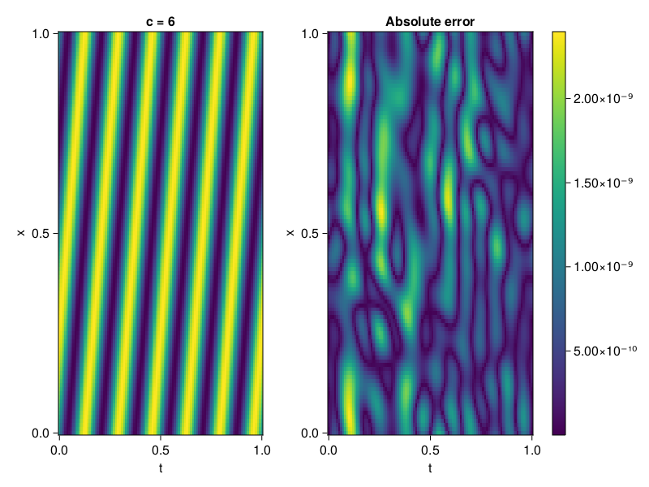

1D Convection Equation
Consider the following 1D-convection equation with periodic boundary conditions.
\[\begin{aligned} &\frac{\partial u}{\partial t}+c \frac{\partial u}{\partial x}=0, x \in[0,1], t \in[0,1] \\ &u(x, 0)=sin(2\pi x) \\ \end{aligned}\]
First we define the PDE.
using ModelingToolkit, Sophon, IntervalSets, CairoMakie
using Optimization, OptimizationOptimJL
@parameters x, t
@variables u(..)
Dₜ = Differential(t)
Dₓ = Differential(x)
c = 6
eq = Dₜ(u(x,t)) + c * Dₓ(u(x,t)) ~ 0
u_analytic(x,t) = sinpi(2*(x-c*t))
domains = [x ∈ 0..1, t ∈ 0..1]
bcs = [u(x,0) ~ u_analytic(x,0)]
@named convection = PDESystem(eq, bcs, domains, [x,t], [u(x,t)])\[ \begin{align} 6 \frac{\mathrm{d}}{\mathrm{d}x} u\left( x, t \right) + \frac{\mathrm{d}}{\mathrm{d}t} u\left( x, t \right) =& 0 \end{align} \]
Imposing periodic boundary conditions
We will use BACON to impose the boundary conditions. To this end, we simply set period to be one.
chain = BACON(2, 1, 8, 1; hidden_dims = 32, num_layers=4)MultiplicativeFilterNet(
filters = BranchLayer(
filter_1 = DiscreteFourierFeature(2 => 32), # 32 parameters, plus 64
filter_2 = DiscreteFourierFeature(2 => 32), # 32 parameters, plus 64
filter_3 = DiscreteFourierFeature(2 => 32), # 32 parameters, plus 64
filter_4 = DiscreteFourierFeature(2 => 32), # 32 parameters, plus 64
),
linear_layers = PairwiseFusion(
Base.Broadcast.BroadcastFunction(*)
layer_1 = Dense(32 => 32), # 1_056 parameters
layer_2 = Dense(32 => 32), # 1_056 parameters
layer_3 = Dense(32 => 32), # 1_056 parameters
),
output_layer = Dense(32 => 1), # 33 parameters
) # Total: 3_329 parameters,
# plus 256 states, summarysize 192 bytes.For demonstration purposes, the model is also periodic in time
sampler = QuasiRandomSampler(500, 100) # data points
strategy = NonAdaptiveTraining(1 , 500) # weights
pinn = PINN(chain)
prob = Sophon.discretize(convection, pinn, sampler, strategy)
@time res = Optimization.solve(prob, BFGS(); maxiters = 1000)u: ComponentVector{Float64}(filters = (filter_1 = (bias = [0.8799033200589044; 0.8663020418063759; … ; -0.021234363681091346; -0.10980479129299178;;]), filter_2 = (bias = [-0.6043883221262384; 0.4950416872689081; … ; -0.17967898722197234; 0.16254130804507497;;]), filter_3 = (bias = [0.46721210014520326; 0.3061903180946014; … ; -0.36145595770938443; -0.37651112316567853;;]), filter_4 = (bias = [0.5719539572674748; -0.11865280657964598; … ; -0.25393244400226556; -0.6246951732296814;;])), linear_layers = (layer_1 = (weight = [-0.09857894857436104 0.0013068495900698128 … 0.24194886955841138 -0.17895815261213557; -0.19241422638785666 0.07727091532472109 … 0.24698155159533772 0.05026038212232708; … ; -0.012394464895117738 -0.2098040921081697 … -0.008097689656388856 0.10493357538019024; 0.3794899899729092 0.410725272268805 … -0.435429804639791 0.20780613332764145], bias = [-0.037277032467400606; 0.04027313932380467; … ; -0.04149434973745854; 0.11626467696448423;;]), layer_2 = (weight = [0.15650744313118178 -0.5633535530193604 … -0.02912852796258017 0.27071263858035516; 0.07166650147143118 -0.32137692340932367 … 0.055816999096644795 0.30509425405168134; … ; 0.2094214834890764 0.2411138354358846 … -0.09592009480864234 0.1605993487378627; 0.24558775881367342 0.1643803839415071 … 0.3910883796384658 -0.35741630468891705], bias = [0.05636949959796692; -0.015230538697193602; … ; -0.07707800643572141; 0.03783774380764342;;]), layer_3 = (weight = [0.4514252200486892 -0.08558842078241907 … -0.2719724791835959 0.12635225790918247; -0.24437398026830365 -0.12092055084052804 … 0.3084767573291094 0.3644270953074885; … ; -0.28368042067179927 -0.33913562748618714 … -0.3715183352713435 0.3817707789654052; -0.4320403377694316 0.22793876306352842 … -0.32819374310558197 0.04438262428131758], bias = [-0.007118920066267079; -0.002767887599374492; … ; -0.008883439703481264; -0.13709066924842817;;])), output_layer = (weight = [0.06720683359819138 -0.26117074568255355 … 0.012742715736782078 1.1128442227365983e-9], bias = [-0.09616013344280996;;]))Let's visualize the result.
phi = pinn.phi
xs, ts= [infimum(d.domain):0.01:supremum(d.domain) for d in domains]
u_pred = [sum(phi([x,t],res.u)) for x in xs, t in ts]
u_real = u_analytic.(xs,ts')
fig, ax, hm = heatmap(ts, xs, u_pred', axis=(xlabel="t", ylabel="x", title="c = $c"))
ax2, hm2 = heatmap(fig[1,end+1], ts,xs, abs.(u_pred' .- u_real'), axis = (xlabel="t", ylabel="x", title="Absolute error"))
Colorbar(fig[:, end+1], hm2)
display(fig)
We can verify that our model is indeed, periodic.
xs, ts= [infimum(d.domain):0.01:supremum(d.domain)*2 for d in domains]
u_pred = [sum(phi([x,t],res.u)) for x in xs, t in ts]
fig, ax, hm = heatmap(ts, xs, u_pred', axis=(xlabel="t", ylabel="x", title="c = $c"))
display(fig)